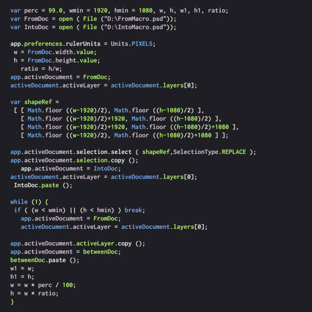
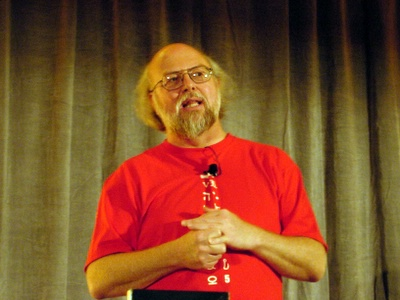

All About James Gosling (The Father of Java)
James Gosling after graduating college and receiving multiple degrees, started to develop major things.
His biggest project was Sun Java and it was the first concept of a Java virtual machine.
With some people helping him he initiated the Java language project.
After many years of work he finally completed it and Java was born.
It is the most used programming language of today, with it being used all over the world.
| Date of Birth |
May 19, 1955 |
| Date of Death |
Currently Alive |
| Birth Place |
Calgary, Canada |
| Education |
Carnegie Mellon University |
| Major achievements |
Invented Java,
Built satellite data acquisition systems,
Built a multiprocessor version of Unix |
| Awards/Recognition |
IEEE John von Neumann Medal, ACM Fellow, ACM Software System Award, Tsutomu Kanai Award
|
"I think it would be a tragic statement of the universe if Java was the last language that swept through." - James Gosling

